Caso 015 · Ami Shinar - Amir Mann · 2014 · transporte (estación de tren)
Consigna C: cuestiono el supuesto de que el edificio de viajeros sea una pieza compacta apoyada a nivel junto a la vía (la lectura literal del boceto: una barra alargada de cubierta inclinada que sube hacia un extremo). El encargo dice que la parcela es larga y estrecha a lo largo de la vía, que el cauce ancho corre paralelo a ella y que los únicos accesos (rodado y peatonal) llegan por el este, al otro lado del cauce. El viajero nace, pues, en el lado este y el tren está en el oeste, con un cauce de unos 20 m de ancho (en el modelo, de x = 24 a 44, fondo a -1,80 m) por medio. Con esos datos, el edificio es el paso: una pasarela-sala de espera elevada a +4,40 m que cruza el cauce de este a oeste, con dos zaguanes de doble altura (uno en el andén, otro en la plaza) y un pabellón de servicios. La forma no copia la parcela (que es una banda norte-sur): es un T con el brazo largo transversal a la vía.
Idea de la sección: la planta baja es de uso rápido (llegar, comprar, aseos, servicios) y la planta primera es el espacio de espera, alto, ventilado y con vistas al cauce y a las vías. La cubierta, de chapa al 6 %, sube hacia el este (de +6,9 a +10,0 m) y convierte el vestíbulo de venta en una doble altura de 10 m que actúa de chimenea.
| Criterio | Partido 1: pasarela-sala sobre el cauce + 2 zaguanes + pabellón | Partido 2: marquesina continua a nivel + 4 cajas en la orilla este |
|---|---|---|
| Implantación | T: brazo de 26,8 m sobre el cauce, pabellón en la orilla este, zaguán en el oeste | Paralelo a la vía en la orilla este; paso peatonal abierto sobre el cauce |
| Piezas / sección | 3 piezas, dos niveles (PB 4,40 + N1) | 4 cajas a nivel + marquesina de 60 m |
| Programa | Espera en la pasarela, servicios en PB | Todo a nivel; espera en marquesina abierta |
| Clima | Sala cerrada con ventilación cruzada y sombra propia | Espera a la intemperie: 30-33 °C en verano sin cerramiento |
| Acceso | Dos extremos accesibles, ascensores en ambos | Pasarela abierta larga sin protección solar |
| Riesgo de cauce | Todo lo habitable a +4,40 sobre la rambla | Cajas a 0,00 junto al cauce (lluvia concentrada en invierno) |
Elección: partido 1. El partido 2 se parece más a la lectura literal (barra paralela a la vía) y deja la espera sin cerrar. En el partido 1 la implantación (T transversal), la masa (dos zaguanes altos y una sala baja y larga) y la sección (espacio habitable elevado sobre el cauce) no salen de tomar las líneas del boceto: sólo se conserva la cubierta inclinada hacia el este, que aquí tiene función (chimenea hacia el vestíbulo).
Superficie construida aproximada: PB ≈ 296 m², N1 ≈ 232 m² (≈ 530 m²).
| Envolvente A: ligera, chapa y vidrio | Envolvente B: masiva, hormigón con huecos pequeños | |
|---|---|---|
| Hueco | N1 norte ≈ 33 % de la fachada, sur ≈ 7 % | ≈ 15 % en todas las fachadas |
| Ventilación | Cruzada N-S en la sala y salida por el vestíbulo alto | Ventilación por huecos pequeños, menor caudal |
| Protección solar | Ventana pequeña y alta al sur; luz difusa por el norte; alero de la cubierta | Inercia térmica, poca luz |
| Respuesta a la oscilación diaria | Baja inercia: necesita aislamiento (10 cm) | Alta inercia (muro 30 cm) |
Elegido: B en planta baja (muros de hormigón de 0,30 m con 10 cm de aislante exterior, huecos al este y al sur del pabellón) y A en la pasarela (muros-viga metálicos revestidos de chapa, ventanas horizontales: 5 de 3,5 m al norte con alféizar 0,80 y 5 de 1,5 m al sur con alféizar 1,40). La oscilación diaria alta se absorbe con la masa en la planta de uso corto y con el aislamiento y la ventilación cruzada en la sala.
| Sistema | Pasarela N1 | Pabellón PB y zaguanes |
|---|---|---|
| Masivo en obra (hormigón) | Exige cimbra en el cauce o grúas de gran capacidad para 26,8 m | Muros y solera in situ, sin riesgo |
| Ligero, montado en seco (acero) | Dos tramos de ≈ 13,4 m prefabricados, montados con grúa desde las orillas, sin apoyo en el cauce | Más caro para un volumen de 15 x 15 m |
Elegido: acero para la pasarela (muros-viga de alma llena de la altura de la sala, vano de 26,8 m, luz/altura ≈ 7) con forjado de hormigón de 0,45 m, y hormigón en obra para el pabellón y los zaguanes. No constan presupuesto ni plazo; la decisión se apoya en que la pasarela no puede apoyarse en el cauce, que tiene -1,80 m y recibe la lluvia invernal concentrada (< 500 mm/año).
| Forma de tocar el suelo | Valoración |
|---|---|
| Apoyarse a nivel junto al cauce | Habitable expuesto a avenidas y sin vistas |
| Elevar la sala a +4,40 y apoyar sólo en las orillas | Elegida: el cauce se conserva (no hay movimiento de tierras en él) y pasa libre bajo la pasarela |
| Semienterrar | Descartada: el cauce está a -1,80 m y hay humedad |
El pabellón y los zaguanes se apoyan a nivel (solera de 0,30 m sobre grava de 15 cm); la plaza queda a 0,00 sin escalones.
| Elemento | Material | Espesor | Motivo |
|---|---|---|---|
| Cubierta | Chapa ondulada, pendiente 6 % (marquesinas 3 %) | 4 cm + 10 cm de aislante + impermeabilización | Pendiente mínima de chapa; evacuación al canalón este |
| Fachada PB | Hormigón visto con aislante exterior y panel de chapa | 0,30 + 0,10 + 0,04 | Inercia térmica |
| Fachada N1 | Chapa (muros-viga) y vidrio en testeros | 0,25 | Montaje en seco |
| Tabiques | Bloque enlucido (aseos) y yeso (ascensores) | 0,12 / 0,15 | Tabiquería ligera |
| Suelos | Baldosa interior; exterior en andén y plaza | 3 cm sobre solera de 0,30 m | Fácil limpieza |
| Carpintería | Vidrio con perfil metálico | – |
Abastecimiento de red al cuarto técnico (10,4 m², con cuadro eléctrico y rack). El agua caliente y la climatización con máquina se resuelven en el proyecto de ejecución (no se dibujan: sólo se reserva el cuarto técnico). Saneamiento: colector bajo la solera de la franja de aseos (eje 3-4) hacia la red; el aseo N1 baja por una bajante adosada a la cara oeste del muro de 0,40 m del eje 3, hacia el mismo colector. Pluviales: la cubierta del pabellón vierte al este y al oeste a canalones; un colector lleva el agua a la balsa de laminación e infiltración de 12 x 8 m en grava, con rebosadero hacia el cauce (dibujada en U02). Electricidad: cuadro en el cuarto técnico, iluminación LED. Ventilación sin máquina: cruzada N-S en la sala (norte 33 % de hueco, sur 7 %) y efecto chimenea hacia las ventanas altas del vestíbulo de venta (cota +10,0 m).
Clima BSh/Csa: verano de 30-33 °C, oscilación diaria alta. Estrategia: masa en PB, alero y orientación de los huecos (poco hueco al sur), ventilación cruzada y salida por chimenea. La sala está elevada y a la sombra de la cubierta; la marquesina cubre el andén.
Itinerario plaza-vestíbulo a 0,00, sin escalones. Puerta principal de 2 hojas (2,20 m) abre hacia el exterior. Ascensores en ambos extremos con paso de 1,00 m; aseo accesible PB y N1. Pasillos y pasos ≥ 1,20 m. Dos salidas de la planta N1 (escaleras de 1,50 m con rellano) y ascensores; ocupación de N1 estimada en ≈ 100 personas (2 m² por persona en 205 m²). Calle de maniobra del aparcamiento de 5,5 m y 2 plazas PMR a 20 m del acceso por el itinerario peatonal. Las barandillas dibujadas son las de la galería (1,10 m sobre el vestíbulo) y los rellanos de las escaleras (0,90 m); los pasamanos laterales de los tramos no están dibujados en este anteproyecto y se resolverán en el proyecto de ejecución.
| Exigido | Propuesto | Cumple / desviación |
|---|---|---|
| Plantas | P01-P03 (PB, N1, cubierta) | Cumple |
| Secciones | S01 (long.) y S02 (transv.) | Cumple |
| Alzados | Sur (S01), este (S02), oeste (S03) | Cumple; el alzado norte no se dibuja porque se parece a un lado del T y no da a espacio público |
| Detalles constructivos | D01 (1:20) | Cumple |
| Espacios exteriores | U02 + U01 | Cumple |
| Vistas | V01 desde la plaza (ojos) y V02 axonometría | Cumple |
| Andenes y espera | Andén 8 x 80 m, marquesina, sala N1, galería | Cumple |
| Vestíbulo y venta | 165 m², taquilla, 2 expendedoras | Cumple |
| Circulaciones y accesibilidad | 2 escaleras, 2 ascensores | Cumple |
| Aseos | 3 en PB + 1 accesible N1 | Cumple; falta un aseo en el zaguán del andén (el viajero usa el N1 por el ascensor): desviación justificada por la superficie del zaguán |
| Locales técnicos y personal | Cuarto técnico, personal, limpieza y basuras | Cumple; el personal no tiene aseo propio: usa el público |
| Aparcamiento y parada | 40 plazas + 2 PMR, parada con marquesina y vial | Cumple |
| Superficies y unidades | Fijadas por el proyectista | Ver el apartado 2 |
| Normativa | No consta | No aplica; se usan mínimos generales de habitabilidad y accesibilidad |
Persisten avisos de ocupación < 60 % en P02, S02, S03 y U01: el edificio es muy largo y estrecho (62 m x 15 m), el alzado oeste tiene 68 m de marquesina y la situación es a escala de territorio. Se probaron escalas y formatos más pequeños y no caben.
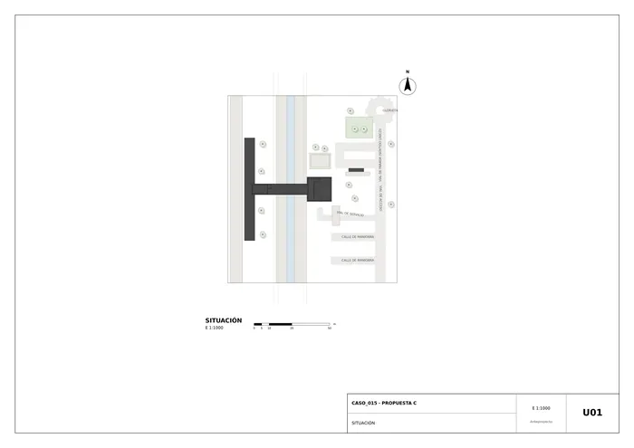
U01 · Situación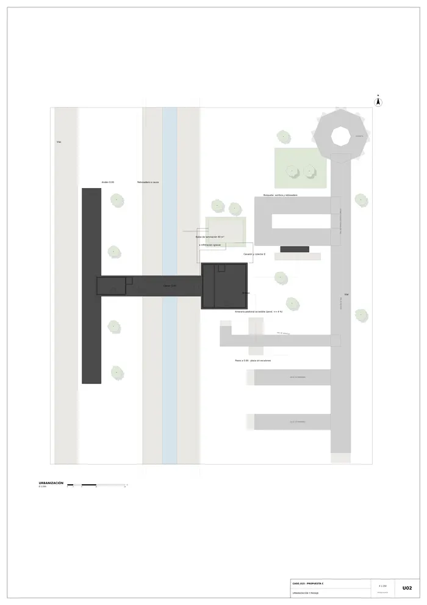
U02 · Urbanización y paisaje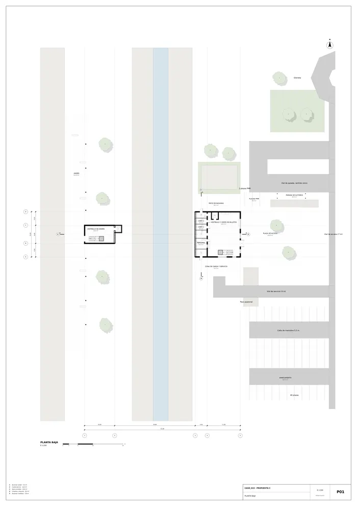
P01 · Planta baja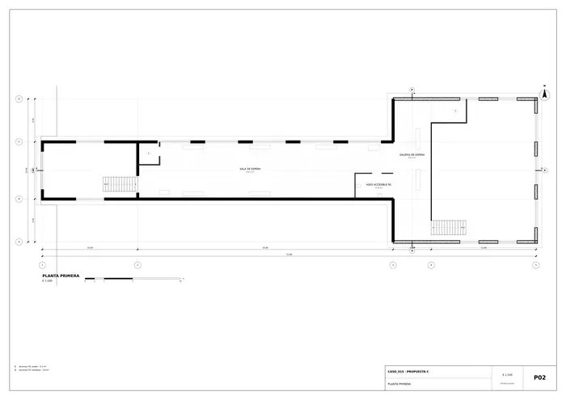
P02 · Planta primera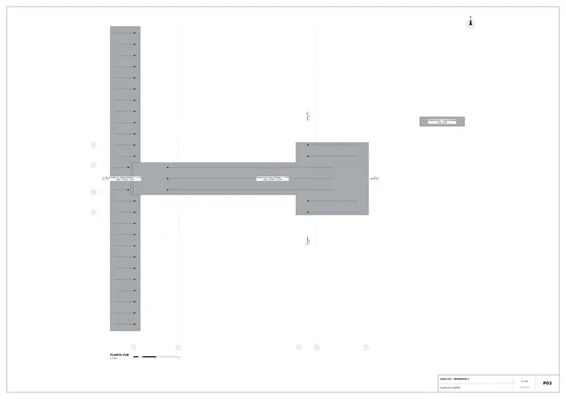
P03 · Planta de cubierta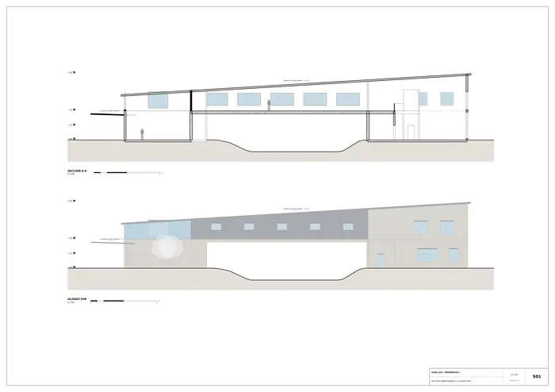
S01 · Sección longitudinal A y alzado sur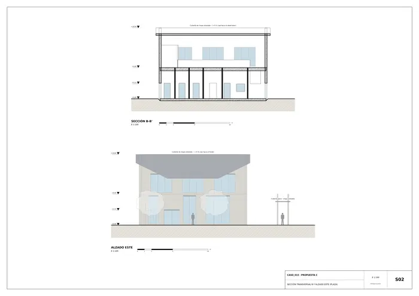
S02 · Sección transversal B y alzado este (plaza)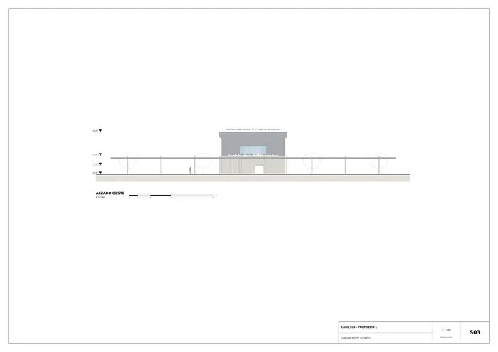
S03 · Alzado oeste (andén)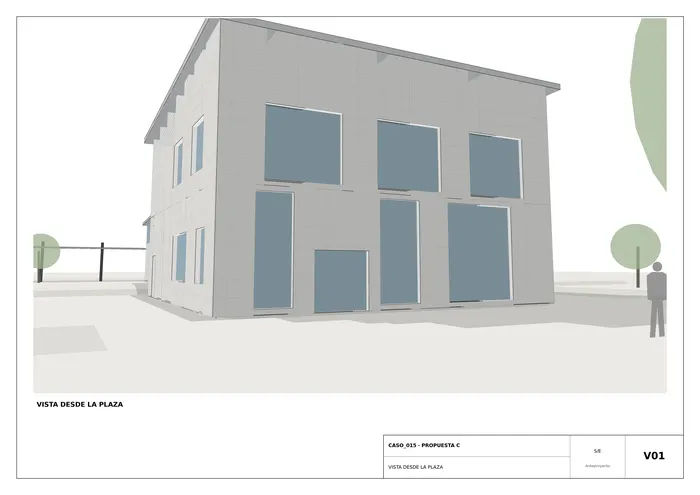
V01 · Vista desde la plaza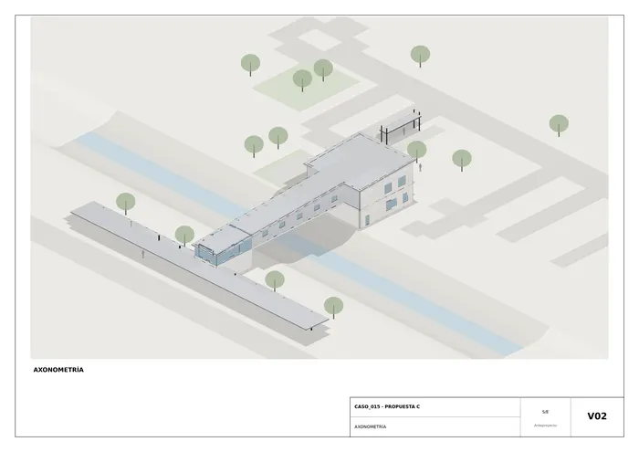
V02 · Axonometría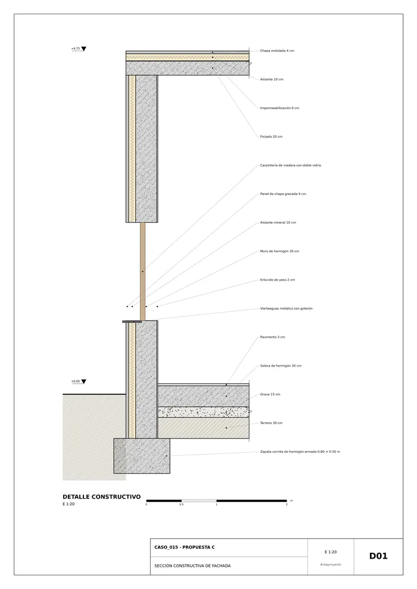
D01 · Sección constructiva de fachadaMemoria de la propuesta tal como la entregó el sistema. Se han omitido las notas internas del proceso (revisiones, control de reconocimiento y referencias a archivos de trabajo).